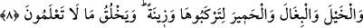
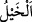
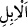

Huleymî der ki: “Bu hüküm, Hicaz’ın havası kuru olduğundan sığırın etinin kuru, süt ve
yağının nemli olduğu içindir.” Sanki Halîmî hadisteki bu hükmün Hicaz’a mahsus
olduğu görüşündedir. Bu, güzel bir îzahtır. Aksi takdirde Hz. Peygamber (a.s.),
hastalıklı olan bir şeyi Allah’a yakınlığa vesîle (kurban) etmiş olurdu. Bu sözü, ancak
sığırın kuru oluşundan dolayı söylemiştir. Bunun başka bir îzâhı da şöyledir: Rasûlullah
(s.a.), sığır eti yemenin câiz olduğunu göstermek üzere ya da başkalarına kolaylık
olması için onu kesmiştir.”
Hz. Peygamber (s.a.)’in koyunu kasdederek şöyle buyurduğu rivâyet edilir: “Onun
yünü varlık, yağı ise geçim kaynağıdır.”[112] Yâni onun sırtındaki varlık ve bolluk
vesîlesi, altındaki ve içindeki ise geçim kaynağıdır. Ebû Hüreyre (r.a.)’dan rivâyete
göre şöyle demiştir: “Rasûlullah (s.a.), (s.a.) zenginlere koyun, fakirlere de tavuk
beslemeyi tavsiye etti ve: “Tavuk, ümmetimin fakirlerinin koyunudur. Cuma günü de
ümmetimin fakirlerinin haccıdır.” buyurdu.”[113]
Bir hadiste şöyle buyrulur: “Koyun sâhibi olunuz. Çünkü o bereket kaynağıdır.”[114]
Hayâtü’l-hayevân’da der ki: Allah koyun cinsine bereket vermiştir. Koyun yılda bir
kez kuzuladığı ve çok yendiği halde yeryüzü onunla doludur. Halbuki yırtıcı hayvanlar
altı-yedi kez yavruladıkları halde pek nâdir görülürler.
Hz. Peygamber (s.a.)’in yüz koyunu, yedi de keçisi vardı. Onları Ümmü Eymen
(r.anhâ) güderdi. Yine sâdece sütü için ayırdığı bir koyunu vardı. Koyunların birisi
öldüğünde Hz. Peygamber (s.a.) “Derisini ne yaptınız?” diye sordu. “O ölü, yâ
Rasûlallah” dediler. Bunun üzerine: “Tabaklamak onu temizler.” buyurdu.[115]
İmam Demîrî der ki: Koçun ciğeri taze iken ateşe tutulup dişler fırçalanırsa dişleri
beyazlatır. Koçun boynuzları bir ağacın dibine gömülürse meyvesi çok olur. İçinde bal
bulunan bir kap beyaz koyun yünüyle kaplanırsa arılar yaklaşmaz.
8. Atları, katırları ve eşekleri binmeniz ve (gözlere) ziynet olsun diye (yarattı).
Allah şu anda bilemeyeceğiniz daha nice (nakil vâsıtaları) yaratır.
“Atları” Yâni Allah, atları da yarattı. “__WORD__ atlar için kullanılan bir cins ismidir. “__WORD__(deve)” kelimesi gibi aynı kelimeden müfredi (tekili) yoktur. Atik ve hecin diye iki cinsi
vardır. Aralarındaki fark, beygirin kemikleri kısrağınkinden daha iri, kısrağınki ise daha
dayanıklıdır. Beygir kısraktan daha güzel, kısrak ise daha süratlidir. Atik, ceylan gibi,
beygir ise koyun gibidir. Atik, anası ve babası Arap olandır. Kusurlardan ve
eksikliklerden uzak olduğu için bu isim verilmiştir. Kâbe de esâret ayıbından uzak